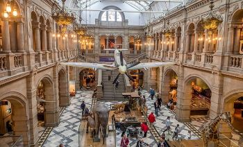
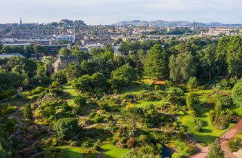
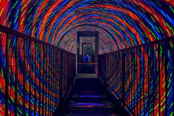
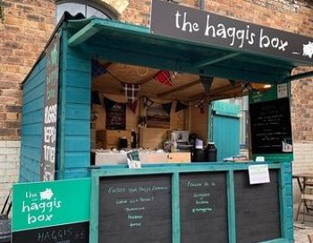
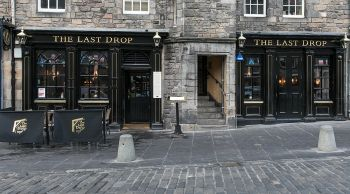
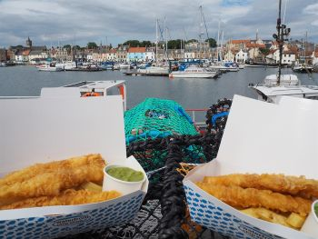
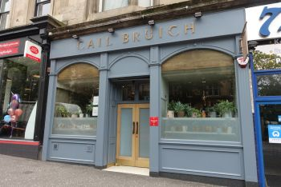

Edinburgh Castle,
Come visit Scotland's most famous castle, learn about its history, and get some good views in the process.
Opening hours are 09:30 to 16:00 for the main castle, and 09:30 to 17:00 for the gatehouse.
Prices are as follows:
- Adults: £21.50
- Children (7-15): £13.00
- Children below 7: Free
- Family ticket (2 adults, 3 children): £74.00

Scotland's national museum.
Come visit Scotland's famous national museum located in Edinburgh. Displaying all kinds of historical artifacts for you to view and learn about.
Opening hours are 10:00 to 17:00.
Entry into Scotland's national museum is entirely free.

Royal Botanical Garden Edinburgh.
Come visit Edinburgh's botanical garden and see over 70 acres of all kinds of plants, having something to fit in every season.
The garden is open to visit between 10:00 to 17:00 every day.
The entry into the garden is entirely free

Camera Obscura & World of Illusions.
Come visit Camera Obscura in Edinburgh. A five story building jam packed full of illusions, aswell as a rooftop terrace with the best 360 vuew you can get of edinburgh.
On sundays to thursdays Camera Obscura is open between 09:00 to 20:00, on fridays its hours extend to 21:00, and on saturdays it expands to 21:30.
Ticket prices are as follows.
- Adults: £23.95
- Children (5-15): £17.95
- Children below 5: Free
- Students: £20.95

The Haggis Box.
Come on down to The Haggis Box located in The Royal Mile, or alternatively find the roaming Haggis Box in other parts of scotland to try their traditional Haggis.
Open every day from 10:00 to 17:00
Prices range from £5.50 to £14.00. Making it both a nice cheap option and a good option for a fuller meal.
Here are some of the avaliable menu items at their location in The Royal Mile
- Haggis neeps and tatties: £12.00
- Morning roll with bacon: £5.50
- Soup of the day: £6.50
- Scotch egg: £14.00

The Last Drop.
Come on down to The Last Drop if you're seeking a pub experience. Located in Edinburg, The Last Drop offers everything you'd expect from a pub. Small meals, snack, and of course drinks.
Open sunday to thursday from 12:00 to 00:00 and extending to 01:00 on fridays and saturdays.
Prices vary greatly, but i will list some of the option for drinks food and snacks you can order.
- Beef brisket nachos (small): £10.50
- Crofter's pie: £17.00
- Old fashioned bourbon: £10.95
- Tommy's margarita: £10.95

Fish & Chips on The Waterfront
Come on down to Fish & Chips on The Waterfront located in Anstruther to experience some of the best fish & chips to be found in Scotland. Serving fish & chips made from sustainable scottish haddock as well as a variety of other delicacies
Open sunday to thrusday from 11:30 to 21:00 and extending to 22:00 on fridays and saturdays.
Prices are around £10-£20 per person and i will list some of the avaliable menu items.
- Single haddock: £9.55
- Haddock and chips: £11.85
- Blaggis and chips: £8.60
- Cheeseburger and chips: £8.00

Cail Bruich
If you're looking for something fancy, come on down to Cail Bruich. A one michelin star restaurant located in Galsgow. A much more expensive option compared to the others, but the quality is undeniable. And they offer changing menus based on the time of year.
Opening times are as follows: Closed sundays and mondays. On fridays an saturday they're open from 12:00 to 16:30, and the open again from 18:30 to 00:00. and from tuesdays to thursdays they're open from 18:30 to 00:00
The prices here are quite steep, with lunch being £100 per person and dinner being £125. And here are some of the things they offer on their autumn menu.
- Stobo estate sika deer (dinner): £125
- Crapaudine beetroot (dinner):£125
- crapaudine beetroot (lunch): £100
- hand-rolled cavatelli pasta (lunch): £100